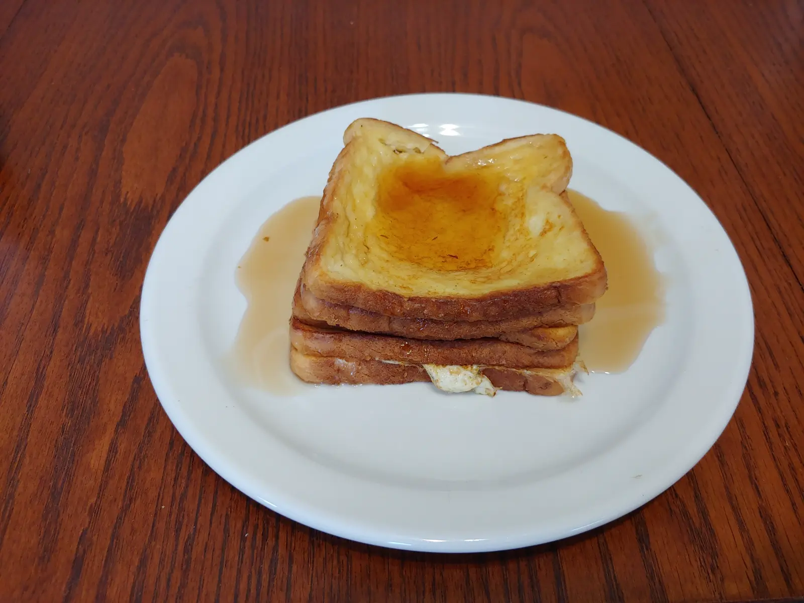

French Toast

This recipe results in five slices of easy to make french toast.
- ⏲️ Prep time: 5 min
- 🍳 Cook time: 25 min
- 🍽️ Servings: 1
Ingredients
- 2 Eggs
- ½ Cup of milk
- 5 Slices of bread
- Maple Syrup (Optional)
- Butter
Directions
- Butter up a frying pan and set it on the burner with low-medium heat.(May need to add more butter in-between slices)
- Take your two eggs and crack them into a bowl together.
- Pour milk in the bowl with the eggs.
- Break the yolks and stir the eggs and milk well with a beater until it’s a smooth, yellow liquid.
- Dip one side of bread into the bowl, making sure the liquid gets into all of the surface area of that side.
- Immediately bring the side back up and scrape off any access liquid on the side with a butter knife.
- Repeat steps 5-6, but for the other side of the bread.
- Drop into the hot pan.
- Cook both sides until golden brown, then plop onto a plate.
- Repeat steps 5 to 9 until you have cooked all of your bread.
- Drench french toast stack in Maple syrup (Optional)